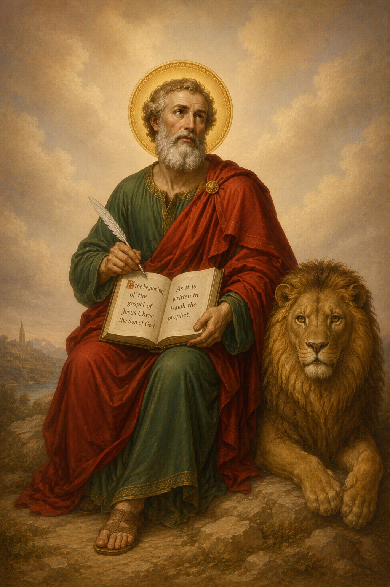

The Church of the Apostles
What Is the Orthodox Church?
The Orthodox Church is the Church founded by Our Lord Jesus Christ, established through the Apostles, and preserved through apostolic succession. She confesses the faith received from Christ, proclaimed by the Apostles, defended by the Fathers, and lived in the worship and sacramental life of the Church.
Orthodox Christianity is not a new interpretation of the Gospel. It is the ancient Christian faith continuing through the generations in one worship, one doctrine, and one life in Christ.
Founded upon Christ
Jesus Christ is the cornerstone of the Church. The Apostles preached Him as crucified, risen, ascended, and coming again in glory.
Preserved through succession
Bishops, priests, and deacons serve the Church in continuity with the apostolic ministry entrusted to the first disciples.
One, Holy, Catholic, Apostolic
The Creed describes the Church as one in faith, holy in Christ, catholic in fullness, and apostolic in origin and teaching.
The faith is handed down, not invented; received with reverence, lived in worship, and preserved for every generation.
The Apostolic Life of the Church
Apostolic Timeline
Apostolic Timeline of the Coptic Orthodox Church
From Christ and the Apostles to the Church of Alexandria and the Coptic Orthodox Church today.
-
Pentecost and the Birth of the Church
The Holy Spirit descends upon the Apostles, and the Church begins her mission to the world.
-
St. Mark Brings the Gospel to Egypt
St. Mark the Evangelist preaches Christ in Alexandria and plants the apostolic foundation of the Church in Egypt.
-
The Church of Alexandria Grows
Alexandria becomes a major center of Christian worship, theology, martyrdom, and biblical learning.
-
Council of Nicaea
The Church confesses the true divinity of the Son and proclaims the Nicene faith.
-
Council of Constantinople
The Nicene Creed is completed, confessing the Holy Spirit as Lord and Giver of Life.
-
Council of Ephesus
The Church confesses St. Mary as Theotokos, the Mother of God, affirming the truth of the Incarnation.
-
The Coptic Orthodox Church Preserves the Faith
The Church of Alexandria continues to preserve the Orthodox faith, liturgy, monastic life, and witness of the martyrs.
-
The Coptic Orthodox Church Worldwide
The Coptic Orthodox Church continues to worship, serve, and proclaim Christ throughout Egypt, the diaspora, and here in Des Moines, Iowa.
The Apostolic Age
From Pentecost to the Ends of the Roman World
The book of Acts shows the Holy Spirit forming the Church, strengthening the Apostles, and sending the Gospel outward from Jerusalem into the world. The Apostolic Age is not simply a beginning point in history; it is the foundation of the Church's worship, teaching, sacramental life, and mission.
- The Holy Spirit descends upon the Apostles, and the Church begins her public witness.
- St. Peter preaches Christ crucified and risen, and about 3,000 are baptized.
- The early Christians continue steadfastly in the Apostles' doctrine, fellowship, breaking of bread, and prayers.
- The Apostles face imprisonment, threats, and suffering, yet continue preaching in the name of Jesus.
- The Church appoints the Seven Deacons to serve the needs of the faithful with wisdom and the Holy Spirit.
- St. Stephen becomes the first martyr, bearing witness to Christ with courage and forgiveness.
- Philip preaches in Samaria, and the Gospel begins spreading beyond Jerusalem.
- Saul encounters the risen Christ and becomes St. Paul, Apostle to the Gentiles.
- St. Peter receives Cornelius, showing that the Gospel is for all nations.
- The Council of Jerusalem discerns how Gentile believers are received into the Church.
- St. James is martyred, and the Church continues to grow through suffering and faithfulness.
- St. Paul's missionary journeys carry the Gospel throughout the Roman world.
St. Mark & Egypt
The Evangelist Who Brought the Gospel to Egypt
St. Mark the Apostle is honored as the founder of the Church of Alexandria. He was one of the Seventy Apostles, one of the Four Evangelists, the author of the Gospel according to St. Mark, and is remembered in the Coptic Orthodox Church as the Beholder of God and Evangelist of Egypt.
Through St. Mark, the Gospel took root in Egypt and grew into a Church known for steadfast worship, courageous martyrdom, deep monastic life, and faithful theological witness.
"By whom all the tribes of the earth were blessed and whose account had reached the ends of the world."
Traditional witness to the apostolic mission


Coptic Orthodox Identity
Who Are the Copts?
A helpful introduction to the history and faith of the Coptic Orthodox Church.
Arrival in Alexandria
According to the tradition of the Church, St. Mark came to Alexandria and preached Christ in Egypt. Through his ministry, the Church of Alexandria was established as one of the great apostolic sees of early Christianity.
Apostolic Ministry
St. Mark ordained bishops, priests, and deacons for the Church, establishing the apostolic order that would continue through the centuries. He planted the life of the Church in worship, teaching, service, and evangelism.
The School of Alexandria
The School of Alexandria became a center of Christian learning, Scripture, theology, and spiritual formation, shaping generations of teachers and defenders of the faith for the wider Christian world.
The Church of Alexandria
A Center of Scripture, Theology, and Worship
Alexandria was one of the great intellectual centers of the ancient world. Long before Christianity, the city was known for learning, libraries, philosophy, and the translation of the Hebrew Scriptures into Greek in the Septuagint. When the Gospel arrived, this city became a place where Scripture, worship, scholarship, and martyrdom shaped the Church's life.
The Septuagint
The Greek translation of the Old Testament became widely used among early Christians and helped carry the language of Scripture into the wider world.
The Catechetical School
The School of Alexandria formed Christians in Scripture, theology, apologetics, and spiritual life, becoming a beacon of Christian scholarship and catechesis.
Clement of Alexandria
Clement stands among the early teachers associated with Alexandria, helping shape Christian reflection and instruction in a major cultural center.
Theological Scholarship
Alexandrian theology emphasized the depth of Scripture, the reality of the Incarnation, and the transformation of the human person in Christ.
Development of Liturgy
The worship of Alexandria carried the apostolic faith through prayer, Scripture, Eucharistic life, hymns, fasting, and the calendar of feasts.
World Christianity
The Church of Alexandria played a central role in defending the faith and shaping Christian doctrine for the whole Church, especially through saints such as Athanasius and Cyril.
Worship & Prayer
The Faith Lived in the Church
Orthodox faith is not only studied. It is prayed, sung, fasted, received, and lived in the body of the Church. Worship forms the heart, illumines the mind, and joins the faithful to Christ.
Liturgical Worship
The Divine Liturgy gathers the Church around Scripture, prayer, praise, and the Eucharist.
Sacraments
The mysteries of the Church communicate the grace of Christ through visible means.
Scripture
The Bible is read, chanted, preached, and interpreted within the life of the Church.
Prayer
Personal and communal prayer teach the soul to turn toward God with repentance and love.
Fasting
Fasting trains the body and heart, making room for humility, mercy, and watchfulness.
Fellowship
The Christian life is lived as a family, bearing one another's burdens in Christ.
The Lord's Prayer
The Prayer Taught by Our Lord Jesus Christ
Prayer Audio
The Lord's Prayer
The prayer taught by our Lord Jesus Christ, prayed by Christians throughout the world and within the worship of the Church.
Introduction of Every Hour
Introduction of Every Hour
In the name of the Father and the Son and the Holy Spirit, one God. Amen.
Kyrie eleison. Lord have mercy. Lord have mercy. Lord bless us. Amen.
Glory to the Father, and to the Son, and to the Holy Spirit. Now and ever and unto the ages of the ages. Amen.
Our Father
Our Father
Make us worthy to pray thankfully:
Our Father who art in heaven, hallowed be Thy name.
Thy kingdom come, Thy will be done, on earth as it is in heaven.
Give us this day our daily bread and forgive us our trespasses, as we forgive those who trespass against us and lead us not into temptation, but deliver us from the evil one.
In Christ Jesus our Lord. For Thine is the kingdom, and the power, and the glory, forever. Amen.
Our Father who art in heaven, hallowed be Thy name. Thy kingdom come. Thy will be done on earth as it is in heaven. Give us this day our daily bread. And forgive us our trespasses, as we forgive those who trespass against us. And lead us not into temptation, but deliver us from evil. For Thine is the kingdom, and the power, and the glory forever. Amen.
Matthew 6:9-13
Continue Exploring
Go Deeper into the Orthodox Faith
Use these pages as next steps for learning more about apostolic history, theology, worship, sacraments, and the life of the Coptic Orthodox Church.